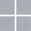

Stop emailing files to yourself or juggling USB drives
Your files stay on the machine they already live on. FileDonkey puts that
machine in Finder or File Explorer as a disk you can open, browse and edit —
over your own local network, with nothing to upload and nothing to copy.
Download Free Beta
v0.5.0

Free beta stays available until v1.0. Buy a license when you are ready.
Preorder Full v1 Release
v1.x.x
Optional for beta testing, offered as a way to support the project early.
Nothing configured. Nothing copied. The devices find each other on their own, and their
files open as though they had been on this machine all along.
How It Works
- 1 Install it on both machines. One installer per computer. No account to create, no server to set up, nothing to sign up for.
- 2 They find each other. Any two machines on the same network pair themselves. Nothing to type, no address to go and look up.
- 3 Open the disk. The other machine appears in your file manager. Work from it exactly as you would a drive of your own.
Key Features
- No cloud account, no subscription. Your files never leave your local network — nothing uploaded
- Nothing to copy or sync. Open a file straight from the other machine and you have the current version
- Lives in your file manager. Finder, File Explorer and your Linux file manager — drag, drop, open and save as usual
- You decide what is visible. Each machine shares one folder you choose; everything outside it stays invisible
- Zero configuration. Install it, and machines on the same network find each other on their own
- Mac, Windows and Linux today. Android and iPhone support planned
Why not just use a network share?
Windows file sharing, Samba and AFP all exist, and on a good day they work. The bad days are the
problem: a password you set two years ago and have not thought about since, a workgroup name that
has to match, a NAS that speaks one dialect to your Mac and another to your PC, and a mount that
quietly disappears the next time the router hands out a different address.
FileDonkey removes that setup rather than documenting it. Machines announce themselves and appear
on their own, each one shares only the folder you point it at, and it behaves the same on Mac,
Windows and Linux — so reaching a file stops depending on which computer you happen to be sitting at.
Important files, instantly accessible wherever you need them
FileDonkey turns the machines you already own into one filesystem. Install it on two of them and
see how long it takes before you stop thinking about where a file lives.
Preorder Full v1 Release
v1.x.x
Optional for beta testing, offered as a way to support the project early.